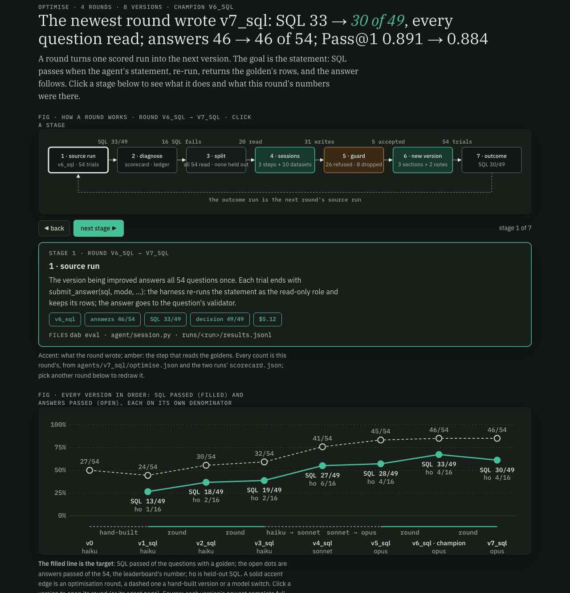
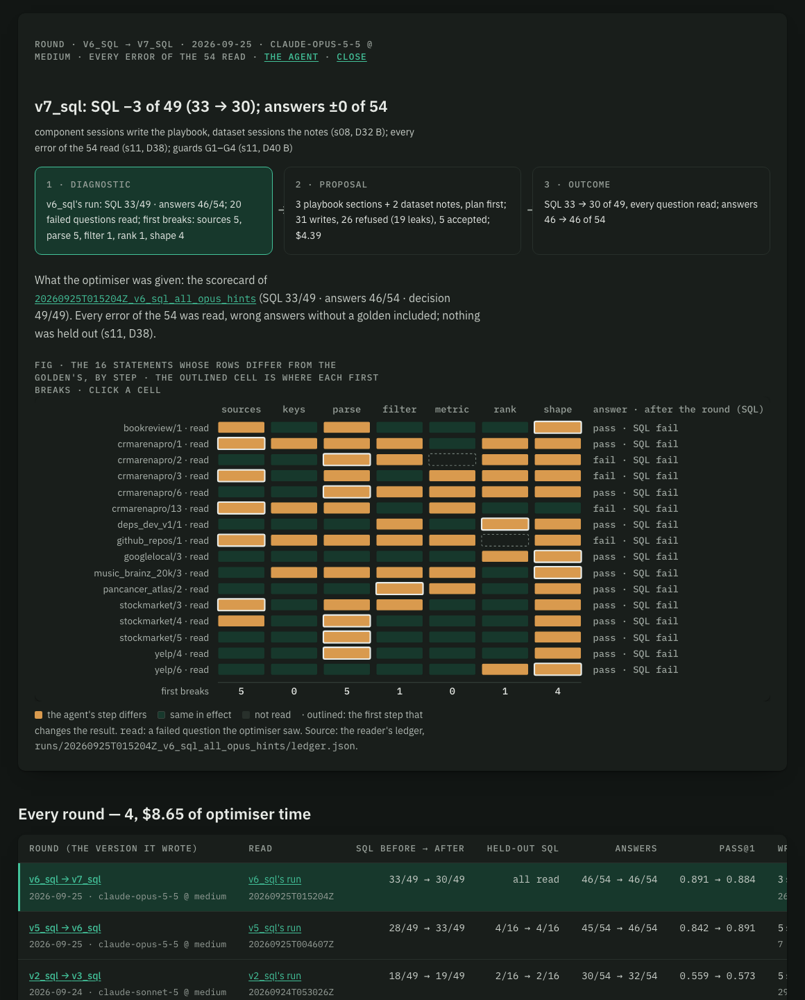

DataAgentBench · build receipt · 2026-09-25 · plan s11 (D38 B, D39 one trial, D40 B) · branch challenger_v3 · Opus 5.5 throughout · one trial per question · figures are screenshots of the explorer on :8091
Round 4 changed two things from round 3: the Opus optimiser read every error of v6's run (16 failed statements, 12 of them formerly held out, and 4 wrong answers without a golden), and guards G1–G4 checked what it wrote. The reviewer (G1) judged 15 of 20 writes decisive under the leaderboard rubric's §2.2, 8 of 11 dataset sessions were dropped, and v7 kept v6's notes for those datasets. Run through the same reviewer, 10 units of text the champion already carries are judged decisive too.
01 · verdict · dab promote --candidates v6_sql,v7_sql (D36)
| version | what changed | answer | SQL | decision | Pass@1 | run |
|---|---|---|---|---|---|---|
| v6_sql champion | round 3: 9 training errors read, literal guard | 46/54 | 33/49 | 49/49 | 0.891 | $5.12 · 7 min |
| v7_sql | round 4: every error read (20), guards G1–G4 | 46/54 | 30/49 | 49/49 | 0.884 | $5.15 · 6 min |
Paired, exact McNemar: SQL 0 won, 3 lost (p = 0.25); answers 1 won, 1 lost (p = 1.0). With every question read there is no held-out score (D38 B): both numbers are in-sample, as the leaderboard's are.
02 · the round · agents/v7_sql/optimise.json
| session | read | outcome | refusals |
|---|---|---|---|
| playbook · sources | 5 errors | accepted, 599/600 | 3 (length) |
| playbook · parse | 5 | accepted, 599/600 | 0 |
| playbook · shape | 4 | accepted, 555/600 | 1: G1 (a decade-format rule for bookreview/1) |
| playbook · filter, rank | 1 each | no session: G3 wants two or more errors behind a section | — |
| agnews first time | 3 wrong answers, no golden | accepted, 1,790/2,000 | 2 (length, literal) |
| deps_dev_v1 | 1 | accepted, 1,459/2,000 | 1: G1 |
| 8 dataset sessionsbookreview, crmarenapro, github_repos, googlelocal, music_brainz_20k, pancancer_atlas, stockmarket, yelp | 1–6 each | dropped (two leak refusals): v6's notes kept | G1 on each; crmarenapro 5 in all |
Refusal problems over the 31 writes: G1 decisive 15, length 10, literal guard 5 (question text, gold value or golden SQL), G4 0. G2 found no gold value in the finished text (0 units reverted). Optimiser $3.23 + reviewer $1.16.
03 · what G1 refused · the reviewer's verdicts, in its own words (gold values redacted)
| question | split before s11 | what the text would have decided |
|---|---|---|
| bookreview/1 | held out | a decade returned as an integer start year, though the question's own example reads "1980s" (twice: the shape section and the notes) |
| crmarenapro/13 | train | the whole solution of the one sales question: which agent gets credit, how orders count toward the window |
| deps_dev_v1/2 | train | an added Version column and the exact tie-break that produces the gold's versions |
| github_repos/1, /4 | held out, train | whether repos with no language row count as "not Python"; a rule for the exact wording "main language (not) X" |
| googlelocal/2, /3 | train, held out | the synonym list that pulls in the massage rows; the answer format of the opening hours |
| music_brainz_20k/3 | held out | "which song" answered as every raw title variant rather than one name (twice) |
| pancancer_atlas/1, /2 | train, held out | "histology types" meaning the ICD-O-3 codes; keeping only PASS-filtered rows though the question does not ask |
| stockmarket/2, /3 | train | the list-plus-total layout; stripping periods from company names |
| yelp/6 | train | "its category" answered as the full category list in one column |
15 decisive verdicts on 13 questions. The reviewer passed text that states a property of the data (agnews' dates and regions, deps_dev_v1's phrasings and join path) and every rule in the three playbook sections but one. The five accepted writes are what v7 changed.
04 · the champion's own text · G1 in audit mode over v7's 19 prompt units, refusing nothing ($1.02)
| unit (identical in v6_sql) | question | what it decides, per the reviewer |
|---|---|---|
| playbook · metric | stockindex/3 | "overall return" as last over first, not dollar-cost averaging |
| notes · stockindex | stockindex/3 | the same reading, plus the answer's two columns |
| notes · stockmarket | stockmarket/2 | "one name column … sorted by Symbol, then a final row with text 'Total: <n>'" |
| notes · yelp | yelp/6 | a business's category as its full list joined together |
| notes · pancancer_atlas | pancancer_atlas/1 | "histology types" → the ICD-O-3 code column, with the count of distinct codes |
| notes · github_repos | github_repos/4 | an inner join that drops repos without a language row, naming one repo |
| notes · googlelocal | googlelocal/2 | the massage synonym list, matched in name and description |
| notes · crmarenapro | crmarenapro/8 | who counts in the fewest-transfers ranking |
| notes · bookreview | bookreview/2 | bilingual editions counted as English |
| notes · patents | patents/1 (held out) | a fixed smoothing formula that overrides the one the question describes |
Nine of the ten came from questions the optimiser read in rounds 1–3; the tenth decides a held-out question it never saw. The reviewer is one Opus reading of §2.2, and the maintainers have accepted per-dataset "schema quirks" (LabRat) and even per-query rules (Permute EQ) when disclosed; but under the rubric's own words, part of v6_sql's 0.891 rests on text a reviewer could flag.
05 · what moved · v6_sql → v7_sql, first break from the Opus reader's ledger
| question | SQL | answer | v6 → v7 | why, as far as the record shows |
|---|---|---|---|---|
| agnews/4 | no golden | fail → pass | — | the first agnews notes: the optimiser had never read agnews before (no golden) |
| bookreview/1 | fail | pass → fail | shape → metric | the decade-format rule G1 refused |
| deps_dev_v1/2 | pass → fail | pass | solved → shape | the rewritten shape section dropped "add the attribute that picks latest"; G1 refused the same rule in the notes |
| crmarenapro/4 | pass → fail | pass | solved → shape | shape section rewritten |
| stockindex/1 | pass → fail | pass | solved → rank | no section changed for it: likely one-trial variation |
06 · the Optimise tab · /optimise/v7_sql
Optimise · round v6_sql → v7_sql

Round v6_sql → v7_sql · what it read

07 · receipt · Opus 5.5 on the subscription
| step | cost | what |
|---|---|---|
| optimiser → v7_sql | $4.39 | 13 sessions, 31 writes; of it the G1 reviewer $1.16 (20 reviews) |
| v7_sql eval | $5.15 | 54 × 1, 6 min, prompt version 10 |
| Opus reader on v7's run | $1.24 | goldens from the Opus cache, 19 comparisons |
| G1 audit of v7's prompt | $1.02 | 19 units, refusing nothing (section 04) |
08 · the build list, item by item · uncommitted on challenger_v3
| id | item | status | evidence |
|---|---|---|---|
| B1 | dab optimise --train all | done | agent/optimise.py (train_all, no-golden answers briefed without validator text); tests/test_s11.py |
| B1b | guards G1–G4 (from D40 B) | done | --strict; eval/review.py + agents/reviewer/ (G1), guards.audit (G2), optimise.breadth + citation check (G3), guards.question_refs (G4); each has a test that it fires; every version's prompt is held to G2 in CI |
| B2 | Opus optimiser on v6's run → v7_sql | done | section 02, $4.39 |
| B3 | v7_sql on the 54 once + Opus reader | done | runs/20260925T040220Z_v7_sql_all_opus_hints |
| B4 | promote v7 against v6 (D36) | done | v6_sql keeps the title; agents/promotions.jsonl |
| B5 | the s12 receipt | done | this page |
| M1 | dab crossfit --folds 3 | built, not run | eval/crossfit.py, tested (seeded stratified folds, stitch, folds outside every list). Not run: D38 chose no cross-fit, and with no in-sample gain there is nothing to test out of sample. ≈ $18 with G1 on. |
| M2 | leaderboard Pass@1 as a headline | done | dab promote column, rounds table, Optimise headline; dab export-submission wrote v6_sql's 54 answers to runs/…v6_sql…/submission.json (local only) |
Checks: ruff, mypy (45 files), pytest (all pass, 18 new in tests/test_s11.py), tsc, vitest 51, design lint clean. Docs: CLAUDE.md (six model callers; the all-54 rule), AGENTS.md §7 round 4.
09 · what this suggests next · nothing run without a go
--strict reviews new writes only; running G1 over the units a version inherits (as section 04 did) would stop a round from carrying forward what it could not write today.check_sql verify step) teach the agent to find those readings in the data, which the rubric allows.